Minetest
Dieser Artikel wurde für die folgenden Ubuntu-Versionen getestet:
Ubuntu 16.04 Xenial Xerus
Ubuntu 14.04 Trusty Tahr
Zum Verständnis dieses Artikels sind folgende Seiten hilfreich:
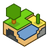
Minetest  (ursprünglich Minetest-c55) ist ein Open-World-Aufbauspiel, welches unter anderem von Minecraft inspiriert wurde. In einer zufällig generierten Welt baut man Rohstoffe ab, um daraus Werkzeuge zu erschaffen und die Umwelt zu gestalten. Dem Spieler steht der Überlebens- sowie der Kreativitätsmodus zur Verfügung. Diese Modi können im Einzel- oder im Mehrspielermodus in einem Netzwerk bestritten werden.
(ursprünglich Minetest-c55) ist ein Open-World-Aufbauspiel, welches unter anderem von Minecraft inspiriert wurde. In einer zufällig generierten Welt baut man Rohstoffe ab, um daraus Werkzeuge zu erschaffen und die Umwelt zu gestalten. Dem Spieler steht der Überlebens- sowie der Kreativitätsmodus zur Verfügung. Diese Modi können im Einzel- oder im Mehrspielermodus in einem Netzwerk bestritten werden.
Minetest wird in der Programmiersprache C++ programmiert und verwendet die Irrlicht 3D-Engine. Ein Artikel zum Fork Voxelands ist ebenfalls im Wiki zu finden.
| 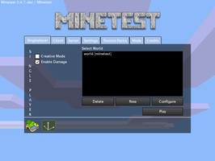 |
| Menü |
| 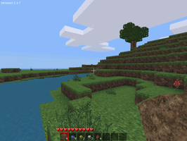 |
| Spielszene |
Installation¶
Das Spiel kann über das folgende Paket installiert [1] werden:
minetest (universe)
 mit apturl
mit apturl
Paketliste zum Kopieren:
sudo apt-get install minetest
sudo aptitude install minetest
PPA¶
Es stehen zwei verschiedene Builds zur Verfügung - es empfiehlt sich die stabile Variante zu nutzen.
Stable¶
Zur Installation muss das folgende PPA freigeschaltet [2] werden.
Adresszeile zum Hinzufügen des PPAs:
ppa:minetestdevs/stable
Hinweis!
Zusätzliche Fremdquellen können das System gefährden.
Ein PPA unterstützt nicht zwangsläufig alle Ubuntu-Versionen. Weitere Informationen sind der  PPA-Beschreibung des Eigentümers/Teams minetestdevs zu entnehmen.
PPA-Beschreibung des Eigentümers/Teams minetestdevs zu entnehmen.
Damit Pakete aus dem PPA genutzt werden können, müssen die Paketquellen neu eingelesen werden.
Nach dem Aktualisieren erfolgt die Installation wie oben angegeben.
Daily¶
Hinweis:
Diese Variante kann Fehler enthalten. Es sollte stable Verwendung finden.
Zur Installation muss das folgende PPA freigeschaltet [2] werden.
Adresszeile zum Hinzufügen des PPAs:
ppa:minetestdevs/daily-builds
Hinweis!
Zusätzliche Fremdquellen können das System gefährden.
Ein PPA unterstützt nicht zwangsläufig alle Ubuntu-Versionen. Weitere Informationen sind der PPA-Beschreibung des Eigentümers/Teams minetestdevs zu entnehmen.
Damit Pakete aus dem PPA genutzt werden können, müssen die Paketquellen neu eingelesen werden.
Kompilieren¶
Um das Spiel aus dem Quellcode zu bauen, werden die folgenden Pakete benötigt [1]:
build-essential
cmake
libirrlicht-dev
libbz2-dev
libpng12-dev
libjpeg8-dev
libxxf86vm-dev
libgl1-mesa-dev
libsqlite3-dev
libogg-dev
libvorbis-dev
libopenal-dev
libcurl4-gnutls-dev
libfreetype6-dev
libgettextpo0
mit apturl
Paketliste zum Kopieren:
sudo apt-get install build-essential cmake libirrlicht-dev libbz2-dev libpng12-dev libjpeg8-dev libxxf86vm-dev libgl1-mesa-dev libsqlite3-dev libogg-dev libvorbis-dev libopenal-dev libcurl4-gnutls-dev libfreetype6-dev libgettextpo0
sudo aptitude install build-essential cmake libirrlicht-dev libbz2-dev libpng12-dev libjpeg8-dev libxxf86vm-dev libgl1-mesa-dev libsqlite3-dev libogg-dev libvorbis-dev libopenal-dev libcurl4-gnutls-dev libfreetype6-dev libgettextpo0
Im nächsten Schritt werden die benötigten Archive minetest und minetest_game heruntergeladen, die .zip-Archive entpackt [3] und anschließend kompiliert [4] [6]:
mv minetest_game-master minetest_game cd .. cmake . -DRUN_IN_PLACE=0 -DENABLE_GETTEXT=1 make -j2 sudo make install
Bedienung¶
| 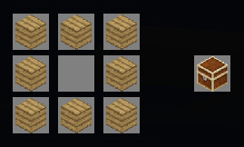 |
| Crafting |
Bevor man das Spiel beginnen kann, muss man eine Welt im Menü erstellen. Es ist möglich, mehrere Welten zu erstellen, die unabhängig voneinander hinsichtlich der möglichen Interaktionen konfiguriert werden können. Die einzeln erstellten Welten werden im versteckten Ordner ~/.minetest/worlds abgespeichert. Beim Start des Spiels wählt man nun seine Welt sowie die Optionen "Creative Modus" oder "Enable Damage" an bzw. ab. Die Gesundheit des Spieler reduziert sich beim Fallen in eine Grube, eine Höhle oder beim Schwimmen unter Wasser. Um die Gesundheit wieder aufzuladen, die durch die roten Herzen am Spielfeldrand angezeigt wird, kann man sich auf der Welt Ratten sammeln und diese in einem Ofen zu Rattensteaks braten. Nähere Informationen zum sogenannten "Cooking" findet man im minetest-Wiki. Sämtliche Rohstoffe, die man zum Bauen benötigt, muss man im Spiel abbauen und durch Crafting erstellen.
Die im Spiel gesammelten Rohstoffe können im Gitter von Hand angefertigt werden - hierzu
I betätigen und die Materialien aus dem Inventar im Gitter platzieren. Die Seite Crafting gibt Hinweise darauf, welche Materialien benötigt werden. So kann man z.B. aus dem Grundmaterial 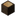 Holz über das Gitter Holzplanken anfertigen, welche man für den Bau einer 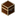 Truhe verwenden kann. Neben dem Ausgangsmaterial ist auch die Anordnung im Gitter von Bedeutung.
| Bedienung | |
| Menüpunkt | Beschreibung |
| "Creative Modus" | Im Creative Modus wird im Gegensatz zum normalen Spielemodus dem Spieler das komplette Repertoire an möglichen Werkstoffen zur Auswahl angeboten. Das erspart ungeduldigen Spielern das teils sehr aufwändige Abbauen von Rohstoffen. |
| "Enable Damage" | Ist diese Option abgewählt, übersteht der Spieler Stürze und Unterwassertauchgänge schadlos. |
Die Steuerung ist unter Tastenkürzel zu ersehen.
Server¶
Im Einzelspielermodus wird ein lokaler Server erstellt. Zu diesem kann sich nur der Einzelspieler-Client mit Administratorrechten verbinden. Im Mehrspielermodus kann man sich mit einem öffentlichen Server aus der Liste verbinden und mit anderen das Abenteuer bestreiten:
* Servers-Minetest
* minetest.ru
Eigener Server¶
| 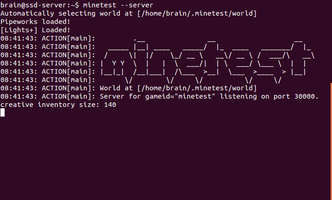 |
| Dedizierter Server |
Minetest beinhaltet einen Server, welcher über die Kommandozeile gesteuert werden kann. Dadurch ist es möglich, einen lokale, dedizierten Server zu erstellen. Dafür ist keine grafische Oberfläche nötig. Um einen dedizierten Server zu starten, verwendet man den Befehl [6]:
minetest --server
Es empfiehlt sich, den Server in einem separaten Screen zu starten, da man somit die Terminalsitzung trennen und später fortführen kann. Das verhindert, dass beim Trennen der Verbindung zum Server der Minetest-Server als Instanz abgewürgt wird.
Konfiguration¶
Das Aussehen sowie das Spielverhalten von Minetest kann angepasst bzw. erweitert werden.
Modifikationen¶
Für das Spiel stehen zahlreiche Modifikationen  (Alternativ ) zur Verfügung. Die Auswahl reicht von technische Spielereien wie Rohrleitungen über Pflanzen und Tieren bis hin zu Sonderbaustoffen wie Lichtsteine und Treppenstufen. Neuere Minetest-Versionen beinhalten einen Modmanager mit Anbindung an die Moddatenbank. Für ältere Versionen müssen die heruntergeladenen Archive in den Weltordner z.B. ~/.minetest/worlds/welt1/worldmods/ entpackt [2] werden. Möchte man, dass die Mods für alle Welten verfügbar sind, werden sie in nach ~/.minetest/mods entpackt. Sie müssen dann noch im Client aktiviert werden. Installierte und aktivierte Mods werden bei Spielstart automatisch geladen und dem Client beim Verbinden ausgeliefert. Somit brauchen sich Mitspieler nicht erst auf die Suche nach den passenden Mods zu begeben und bekommen beim Anmelden am Server alle notwendigen Texturen.
(Alternativ ) zur Verfügung. Die Auswahl reicht von technische Spielereien wie Rohrleitungen über Pflanzen und Tieren bis hin zu Sonderbaustoffen wie Lichtsteine und Treppenstufen. Neuere Minetest-Versionen beinhalten einen Modmanager mit Anbindung an die Moddatenbank. Für ältere Versionen müssen die heruntergeladenen Archive in den Weltordner z.B. ~/.minetest/worlds/welt1/worldmods/ entpackt [2] werden. Möchte man, dass die Mods für alle Welten verfügbar sind, werden sie in nach ~/.minetest/mods entpackt. Sie müssen dann noch im Client aktiviert werden. Installierte und aktivierte Mods werden bei Spielstart automatisch geladen und dem Client beim Verbinden ausgeliefert. Somit brauchen sich Mitspieler nicht erst auf die Suche nach den passenden Mods zu begeben und bekommen beim Anmelden am Server alle notwendigen Texturen.
Hinweis:
Einige Mods sind nicht mit allen Versionen des Spiels kompatibel.
Aber Achtung, das Ausprobieren von Mods ist mit Vorsicht zu genießen. Verbaut man spezielle Steine aus einem Mod und entfernt diesen dann wieder wegen möglicher Inkompatibilität zu anderen Modifikationen, hinterlässt diese Aktion an den betreffenden Stellen häßliche Fehler, da die Texturen nicht mehr vorhanden sind.
| 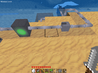 |
| Modifikation pipeworks |
| 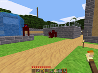 |
| Modifikation animals |
| 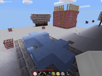 |
| Modifikation 4seasons |
| 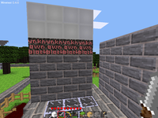 |
| Fehlende Texturen |
minetest.conf¶
Die Datei minetest.conf ist im Homeverzeichnis unter ~/.minetest zu finden und kann mit einem Editor [5] bearbeitet werden. In der Grundkonfiguration sind die folgenden Einträge zu ersehen:
address = creative_mode = 0 enable_3d_clouds = 0 enable_damage = 1 name = BENUTZERNAME new_style_leaves = 0 opaque_water = 0 port = 30000 smooth_lighting = 1
Parameter¶
Zusätzliche Parameter können übergeben werden.
| Parameter | |
| Parameter | Funktion |
wanted_fps = 30 | Erwünschte Bildfrequenz |
fps_max = 60 | Maximale Bildfrequenz |
screenw = 800 | Bildbreite - hier 800 Pixel. |
screenh = 600 | Bildhöhe - hier 600 Pixel. |
fullscreen = true | Vollbild (true) / Fenstermodus (false) |
screenshot_path = | Relativer / Absoluter Speicherort |
enable_clouds = true | Wolken aktiviert - weiterer möglicher Eintrag: false |
enable_3d_clouds = true | 3D-Wolken (true und false möglich) |
opaque_water = 1 | Durchsichtigkeit des Wassers (1 und 0) |
fast_move = 1 | Schneller laufen ( J drücken) |
fov = 72 | Sichtfeld anpassen |
free_move = 1 | In der Welt "fliegen". |
enable_sound = 0 | Sound (de)aktivieren - 0 bzw. 1 |
time_speed = 0 | definiert den Tag/Nacht-Zyklus 0=kein Wechlsel |
Weitere Parameter sind im Wiki von Minetest zu finden.
Tastenkürzel¶
Die wichtigsten Tastenkürzel können der Tabelle entnommen werden. Die Belegung kann im Spiel neu zugewiesen werden.
| Tastenkürzel | |
| Taste(n) | Funktion |
 | Spielfigur bewegen |
| Sprung | |
 | Angriff, Blöcke abbauen, ... |
 | 10 Blöcke/Gegenstände im Inventar bewegen. |
| Mausrad | Blöcke/Gegenstände bewegen |
 | Benutze, Gegestand ablegen,... |
| Q | Block/Gegenstand ablegen |
| 1 - 9 | Direktanwahl von Blöcken/Gegenständen |
| I | Inventar |
| T | Chat |
| ⇧ | Auf Leitern steigen, schleichen und im Flug steigen |
Infobox¶
| Minetest | |
| Genre: | Open-World-Spiel |
| Sprache: |  |
| Veröffentlichung: | 2011 |
| Entwickler: | Perttu Ahola und Andere |
| Systemvoraussetzungen: | - |
| Medien: | Download |
| Strichcode / EAN / GTIN: | - |
| Läuft mit: | nativ |
- Erstellt mit Inyoka
-
 2004 – 2017 ubuntuusers.de • Einige Rechte vorbehalten
2004 – 2017 ubuntuusers.de • Einige Rechte vorbehalten
Lizenz • Kontakt • Datenschutz • Impressum • Serverstatus -
Serverhousing gespendet von